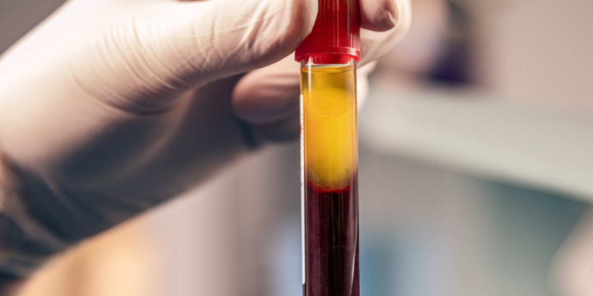

|
|

|
|
Novità in studio
È attivo Studio Bonaccorso Lab
Gentile paziente,
da oggi puoi fare i prelievi per i tuoi esami del sangue direttamente allo Studio Bonaccorso. Nasce Studio Bonaccorso Lab, il nostro centro prelievi per gli esami della longevità: un unico posto dove fare il prelievo, ricevere i risultati e leggerli insieme al medico, all'interno del tuo percorso di medicina funzionale e della longevità.
|
Perché è importante
In medicina funzionale gli esami del sangue sono il punto di partenza: ci aiutano a capire cosa succede nell'organismo, spesso prima che compaiano i sintomi. Misurare l'infiammazione, il rischio cardiovascolare e i marcatori dell'invecchiamento ci permette di intervenire per tempo, con un percorso costruito su di te.
|
|
|
Cosa puoi fare con Studio Bonaccorso Lab
|
|
Prelievi per esami del sangue
Esami ematochimici, check-up completi, profilo ormonale e tiroideo.
|
Prelievi della longevità
Pannelli avanzati sui marcatori dell'invecchiamento, per prevenire per tempo.
|
|
Infiammazione e citochine
Dosaggio delle citochine infiammatorie e dei marcatori dell'infiammazione cronica.
|
Valutazione cardiovascolare
Profilo lipidico avanzato e marcatori del rischio cardiovascolare.
|
|
|
Come funziona
|
1 |
Prenota il prelievo online o per telefono. |
2 |
Vieni in studio per il prelievo, in un ambiente riservato e accogliente. |
3 |
Leggi i risultati con il medico, che li integra nel tuo percorso personalizzato. |
|
|
oppure chiamaci al 02 91766 535 · 345 7245102
|
|
Ti aspettiamo in studio,
Dott. Michele Bonaccorso
Medico funzionale e della longevità
|
|
Milano · Via Luigi Settembrini 54, 20124
Roma · Via Flaminia 489 (zona Ponte Milvio), 00191
Lunedì – Venerdì 11:00 – 19:00 · Sabato 10:00 – 17:00
studiobonaccorso.it
Ricevi questa email perché sei iscritto alla newsletter dello Studio Bonaccorso. Annulla l'iscrizione
|